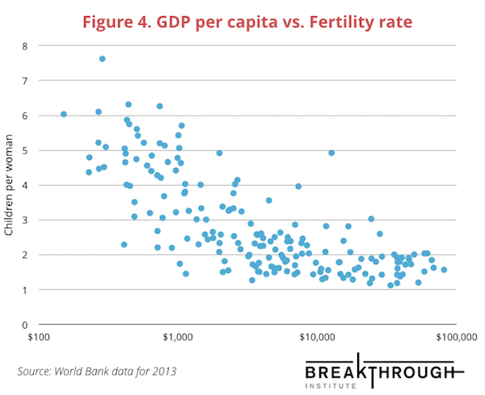

class: inverse, middle, center # Joint and Conditional Distributions -- ### Our last module! -- ### ...🎉? ...😢? --- ## Our work so far... .center[<img src="normal.png" width = 500>] .center[We've been mostly concerned with problems that only have **one variable**:] -- $$X_1, X_2, \cdots, X_n \sim Normal(\mu, \sigma^2)$$ -- $$X_1, X_2, \cdots, X_n \sim Binomial(n, p)$$ -- $$X_1, X_2, \cdots, X_n \sim Exponential(\lambda)$$ --- ## Our work so far... But what if we wanted to talk about **relationships** between variables? .center[<img src="bubble.png" width = 500>] -- .center[That's what this module (and most of Econometrics) will be all about!] --- ## Discrete joint distributions .center[Many weeks ago, we worked with these **joint distribution** tables] .center[<img src="table.png" width = 600>] -- .center[A: "Grade 80" B: "10 hours of study" <br>] <font size = 6> $$P(A\cap B) = ❓❓❓❓$$ </font> --- ## Discrete joint distributions .center[Many weeks ago, we worked with these **joint distribution** tables] .center[<img src="table.png" width = 600> A: "Grade 80" B: "10 hours of study" <br>] <font size = 6> $$P(A\cap B) = 0.09$$ </font> --- ## Discrete joint distributions .center[Many weeks ago, we worked with these **joint distribution** tables] .center[<img src="table.png" width = 600> A: "Grade 80" B: "10 hours of study" <br>] <font size = 6> $$P(B) = ❓❓❓❓$$ </font> --- ## Discrete joint distributions .center[Many weeks ago, we worked with these **joint distribution** tables] .center[<img src="table.png" width = 600>] .center[ A: "Grade 80" B: "10 hours of study" <br>] <font size = 6> $$P(B) = 0.22 + 0.09 + 0.02$$ </font> --- ## Discrete joint distributions .center[Many weeks ago, we worked with these **joint distribution** tables] .center[<img src="table.png" width = 600>] .center[ A: "Grade 80" B: "10 hours of study" <br>] <font size = 6> $$P(A|B) = ❓❓❓❓$$ </font> --- ## Discrete joint distributions .center[Many weeks ago, we worked with these **joint distribution** tables] .center[<img src="table.png" width = 600>] .center[ A: "Grade 80" B: "10 hours of study" <br>] <font size = 6> $$P(A|B) = \frac{P(A\cap B)}{P(B)} = \frac{0.09}{0.22 + 0.09 + 0.02}$$ </font> --- ## Discrete joint distributions .center[Now we can think of this table as **joint PMF**] .center[<img src="table2.png" width = 500>] .center[ <font size = 6> $$p_{XY}(x,y)$$ </font> ] --- ## Discrete joint distributions .center[Now we can think of this table as **joint PMF**] .center[<img src="table2.png" width = 500>] .center[ <font size = 6> $$p_{XY}(10, 80) = ❓❓❓❓$$ </font> ] --- ## Discrete joint distributions .center[Now we can think of this table as **joint PMF**] .center[<img src="table2.png" width = 500>] .center[ <font size = 6> $$p_{XY}(10, 80) = 0.09$$ </font> ] --- ## Discrete joint distributions .center[And from it we can derive the **marginal PMF of X**] .center[<img src="table2.png" width = 500>] .center[ <font size = 6> $$p_{X}(10) = ❓❓❓❓$$ </font> ] --- ## Discrete joint distributions .center[And from it we can derive the **marginal PMF of X**] .center[<img src="table2.png" width = 500>] .center[ <font size = 5> $$p_{X}(10) = p_{XY}(10, 40) + p_{XY}(10, 80) + p_{XY}(10, 100)$$ </font> ] --- ## Discrete joint distributions .center[And from it we can derive the **marginal PMF of X**] .center[<img src="table2.png" width = 500>] .center[ <font size = 6> $$p_{X}(10) = 0.22 + 0.09 + 0.02$$ </font> ] --- ## Discrete joint distributions .center[And also the **conditional PMF of Y given X**] .center[<img src="table2.png" width = 500>] .center[ <font size = 6> $$p_{Y|X}(y|x) = \frac{p_{XY}(x,y)}{p_{X}(x)}$$ </font> ] --- ## Discrete joint distributions .center[And also the **conditional PMF of Y given X**] .center[<img src="table2.png" width = 500>] .center[ <font size = 6> $$p_{Y|X}(80|10) = ❓❓❓❓$$ </font> ] --- ## Discrete joint distributions .center[And also the **conditional PMF of Y given X**] .center[<img src="table2.png" width = 500>] .center[ <font size = 6> $$p_{Y|X}(80|10) = \frac{p_{X,Y}(10,80)}{p_{X}(10)}$$ </font> ] --- ## Discrete joint distributions .center[And also the **conditional PMF of Y given X**] .center[<img src="table2.png" width = 500>] .center[ <font size = 6> $$p_{Y|X}(80|10) = \frac{0.09}{0.22 + 0.09 + 0.02}$$ </font> ] --- ## Discrete joint distributions .center[And also the **cumulative joint distribution X and Y**!] .center[<img src="table2.png" width = 500>] .center[ <font size = 6> $$F_{XY}(x,y) = \sum_{\text{values of }X \leq x \\ \text{values of }Y \leq y }p_{XY}(x,y)$$ </font> ] --- ## Discrete joint distributions .center[And also the **cumulative joint distribution X and Y**!] .center[<img src="table2.png" width = 500>] .center[ <font size = 5> $$F_{XY}(5,80) = p_{XY}(1,40) + p_{XY}(1,80) + p_{XY}(5,40) + p_{XY}(5,80)$$ </font> ] --- ## Discrete joint distributions .center[And also the **cumulative joint distribution X and Y**!] .center[<img src="table2.png" width = 500>] .center[ <font size = 6> $$F_{XY}(5,80) = 0.23 + 0.12 + 0.07 + 0.16$$ </font> ] --- # HW12 Question Given the following discrete joint distribution .center[<img src="table3.png" width=400>] Find + The PMF of $X$ + The conditional PMF of $Y$ given $X = 2$ + The value of the joint CDF at $X = 3$ and $Y = 1$ --- ## Continuous Joint Distributions .center[We can also define **joint probability density functions** <font size=6> $$f_{XY}(x,y)$$ </font> they work just like their discrete counterparts...] -- .center[<img src="joint_normal.jpg" height = 300> <br> ...but they look *way cooler* 😎] --- # HW12 Question Suppose that $X, Y$ have the following *joint Uniform* density: .center[<img src="joint_uniform.jpg" height = 250>] $$f_{XY}(x,y) = \begin{cases} \frac{1}{6} \qquad \text{ if } 0 \leq x \leq 2 \text { and } 0 \leq y \leq 3 \\\ 0 \qquad \text{otherwise} \end{cases}$$ <br> .center[If we draw from this distribution, what will be the probability that <br> $0 \leq X \leq 1$ and $0 \leq Y \leq 1$?] --- # HW12 Question Suppose that $X, Y$ have the following *joint Uniform* density: .center[<img src="joint_uniform_cut.jpg" height = 250>] $$f_{XY}(x,y) = \begin{cases} \frac{1}{6} \qquad \text{ if } 0 \leq x \leq 2 \text { and } 0 \leq y \leq 3 \\\ 0 \qquad \text{otherwise} \end{cases}$$ <br> .center[It will be $1\times 1 \times \frac{1}{6}$] --- ## Quick note: Visualizing distributions .center[It's common to visualize distributions in 2D via <br> the *countors* of the probability density] .center[<img src="contour1.jpg">] --- ## Quick note: Visualizing distributions .center[It's common to visualize distributions in 2D via <br> the *countors* of the probability density] .center[<img src="contour2.jpg">] .center["Cut" slices of equal probability] --- ## Quick note: Visualizing distributions .center[It's common to visualize distributions in 2D via <br> the *countors* of the probability density] .center[<img src="contour3.jpg">] .center[Look from "above"] --- ## Quick note: Visualizing distributions .center[It's common to visualize distributions in 2D via <br> the *countors* of the probability density] .center[<img src="contour4.jpg">] .center[Drawing from this distribution: higher areas have higher probability] --- ## Covariance .center[The **covariance** between two random variables measures <br> how often they are *simultaneously* both "large" or both "small".] -- .center[<img src="cov4.png" height = 400>] .center[High covariance] --- ## Covariance .center[The **covariance** between two random variables measures <br> how often they are *simultaneously* both "large" or both "small".] .center[<img src="cov2.png" height = 400>] .center[Moderate covariance] --- ## Covariance .center[The **covariance** between two random variables measures <br> how often they are *simultaneously* both "large" or both "small".] .center[<img src="cov0.png" height = 400>] .center[Zero covariance] --- ## Covariance .center[The **covariance** between two random variables measures <br> how often they are *simultaneously* both "large" or both "small".] .center[<img src="cov0.png" height = 400>] .center[Zero covariance] --- ## Covariance .center[By "large" or "small", <bR> we mean greater or smaller than their respective expectations.] .center[<img src="cov_with_mean1.png" height = 400>] --- ## Covariance .center[By "large" or "small", <bR> we mean greater or smaller than their respective expectations.] .center[<img src="cov_with_mean4.png" height = 400>] .center[Deviations from expectations] --- ## Covariance .center[By "large" or "small", <bR> we mean greater or smaller than their respective expectations.] .center[<img src="cov_with_mean1_5.png" height = 400>] .center[Together greater than expectations] --- ## Covariance .center[By "large" or "small", <bR> we mean greater or smaller than their respective expectations.] .center[<img src="cov_with_mean2_5.png" height = 400>] .center[Together smaller than expectations] --- ## Covariance .center[By "large" or "small", <bR> we mean greater or smaller than their respective expectations.] .center[<img src="cov_with_mean2.png" height = 400>] .center[$$(X - EX)(Y - EY) > 0$$] --- ## Covariance .center[By "large" or "small", <bR> we mean greater or smaller than their respective expectations.] .center[<img src="cov_with_mean3.png" height = 400>] .center[$$(X - EX)(Y - EY) < 0$$] --- ## Covariance <br><br><br> .center[Looks at their deviations...] <font size=6> $$(X - E_X[X])(Y - E_Y[Y])$$ </font> --- ## Covariance <br><br><br> .center[...what happens *on average*?] <font size=6> $$E_{XY}[(X - E_X[X])(Y - E_Y[Y])]$$ </font> --- ## Covariance <br><br><br> <font size=6> $$Cov(X,Y) = E_{XY}[(X - E_X[X])(Y - E_Y[Y])]$$ </font> .center[That's what the **covariance** is!] <br><br> -- .center[For discrete random variables, this becomes] <img src="cov_fmla.png" width = 600> -- <br> For continuous random variables, the sum turns into an integral, but it's *just outside* the scope of our course. --- ## HW12 Question Find $Cov(X,Y)$ .center[<img src="table3.png" width = 400>] --- ## HW12 Question Find $Cov(X,Y)$. .center[<img src="cov_answer.png" width = 400>] <br><br> --- ## Correlation .center[Which one has the largest covariance?] .center[<img src="covs.png", width = 800>] -- .center[Trick question: they're all equal!] --- ## Correlation .center[In order to compare degrees of covariance across different joint distributions, <br> we usually normalize the covariance by dividing by the standard deviations.] <font size=6> $$Corr(X,Y) = \frac{Cov(X,Y)}{SD(X)SD(Y)}$$ </font> .center[The result is called the **correlation** between $X$ and $Y$.] .center[Correlation will always be a number between -1 and 1.] --- ## Covariance vs Dependence .center[Covariances (and correlations) are a measure of **linear** relationship.] .center[<img src="correlations.png", width = 700>] .center[Two random variables can have **zero covariance** but still be dependent.] .center[The opposite is not true: independence implies zero covariance.] --- ## Variance of sums .center[<img src="cov_sum_0.png", width = 800>] --- ## Variance of sums .center[<img src="cov_sum_1.png", width = 800>] --- ## Variance of sums .center[<img src="cov_sum_2.png", width = 800>] --- ## Variance of sums .center[<img src="cov_sum_3.png", width = 800>] --- ## Variance of sums .center[<img src="cov_sum_4.png", width = 800>] --- ## Variance of sums .center[<img src="cov_sum_4.9.png", width = 800>] -- <br> <font size=5> .center[When $Cov(X,Y)$ is big and positive, <br>extreme results for $X + Y$ are more common] </font> --- ## Variance of sums .center[<img src="cov_sum_0.png", width = 800>] --- ## Variance of sums .center[<img src="cov_sum_b1.png", width = 800>] --- ## Variance of sums .center[<img src="cov_sum_b2.png", width = 800>] --- ## Variance of sums .center[<img src="cov_sum_b3.png", width = 800>] --- ## Variance of sums .center[<img src="cov_sum_b4.png", width = 800>] --- ## Variance of sums .center[<img src="cov_sum_b4.9.png", width = 800>] -- <br> <font size=5> .center[When $Cov(X,Y)$ is big and negative, <br>$X$ and $Y$ tend to cancel each other out, <br>so extreme results are less frequent] </font> --- ## Variance of sums Here's the formula for variance of sums. .footnote[.red[*] <font size = 1>Note the similarity with $(a + b)^2 = a^2 + b^2 + 2ab$? <br>That's not a coincidence - prove it by yourself!</font>] <font size=5> $$Var(X + Y) = Var(X) + Var(Y) + 2Cov(X,Y)$$ $$Var(X - Y) = Var(X) + Var(Y) - 2Cov(X,Y)$$ </font> -- Note that: + If $X, Y$ are independent, then $Cov(X,Y) = 0$. + And if $Cov(X,Y) = 0$, then the formula is simply <font size=5> $$Var(X + Y) = Var(X) + Var(Y)$$ </font> ...which is the formula you already know and love. --- ## Correlation does not imply causation It's tempting to read correlation as a causal-effect relationship. This is **definitely not the case**. -- Sometimes, we estimate **spurious** correlations because of little data. .center[<img src="spurious_correlation.png" width = 350>] .center[Ridiculous examples <a href="http://www.tylervigen.com/spurious-correlations">here</a>. ] --- ## Correlation does not imply causation Some other times, the correlation is a feature of the true model. But is there a **causal** link? .center[<img src="causal1.png" width = 700>] --- ## Correlation does not imply causation Some other times, the correlation is a feature of the true model. But is there a **causal** link? .center[] -- .center[Econometrics will be all about teasing out causal structures!] --- class: middle, center <img src="correlation.png" width = 800> --- ## What do these questions have in common? .center[<img src="questions.png" width = 600>] --- ## Conditional expectation <font size=1>Last topic of the course!</font> All questions can be rephrased as **expectations within a group**. -- .center[<img src="q1.png" width = 700>] --- ## Conditional expectation <font size=1>Last topic of the course!</font> All questions can be rephrased as **expectations within a group**. .center[<img src="q2.png" width = 600>] --- ## Conditional expectation This is called a **conditional expectation**: given some information about a random variable $X$, what is the *expected* value of $Y$? <bR> -- For discrete random variables: <font size=6> $$E[Y|X=x] = \sum_{values \ of \ Y} y \cdot p_{Y|X}(y|x)$$ </font> -- For continous random variables: <font size=6> $$E[Y|X=x] = \int y \cdot f_{Y|X}(y|x) dy$$ </font> -- .center[Just like the usual expectation, <br>but using the *conditional probability*.] --- ## Conditional expectation as a function of $x$ The conditional expectation maps $X$ to a guess for $Y$. $$f(x) = E[Y | X = x]$$ .center[<img src="mean2.png" height = 300>] .center[*Example: when the value of $X$ is $1$, our guess for $Y$ is $5$ (yellow), <br> when the value of $X$ is $2$, our guess for $Y$ is $8$ (black)*] --- ## Exercise What is $E[Y|X=5]$? .center[<img src="table2.png" width = 450>] .center[<b>Hint</b> First find $p_{Y|X}(y|5)$ for all values of $Y$.] -- $$E[Y|X=5] = 100 \times \frac{0.07}{0.3} + 80 \times \frac{0.16}{0.3} + 40 \times \frac{0.07}{0.3} = 75\frac{1}{3}$$ --- ## Conditional expectation as random variable .center[My coffee shop has five customers.] .center[<img src="coffee1.png">] .center[Each customer spends $X_i$ dollars, with $E[X_i] = 10$.] .center[On average, what is my total revenue?] -- <br><br> <font color="blue"> $$S = X_1 + \cdots + X_5$$ $$E[S] = E[X_1 + \cdots + X_5] = 5E[X_1] = 50$$ </font> --- ## Conditional expectation as random variable .center[<img src="coffee2.png" height = 200>] .center[Each customer spends $X_i$ dollars, with $E[X_i] = 10$.] .center[60% of the time, all five customers come. <br>40% of the time, only one customer comes.] .center[On average, what is my total revenue?] --- ## Conditional expectation as random variable .center[<img src="coffee2.png" height = 200>] <br><br> <font color="blue"> -- Sometimes we have $N = 1$ clients, and the average revenue is 10. -- $$E[S|N=1] = 10$$ -- Other times we have $N = 5$ clients, and the average revenue is 50. -- $$E[S|N=5] = 50$$ </font> --- ## Conditional expectation as random variable .center[<img src="coffee2.png" height = 200>] <br><br> <font color="blue"> To find the "overall" expectation, we compute: $$E[S] = 10\times 0.40 + 50\times 0.60$$ --- ## Conditional expectation as random variable .center[<img src="coffee2.png" height = 200>] <br><br> <font color="blue"> To find the "overall" expectation, we compute: $$E[S] = E[S|N=1]\times 0.40 + E[S|N=5]\times 0.60$$ --- ## Conditional expectation as random variable .center[<img src="coffee2.png" height = 200>] <br><br> <font color="blue"> To find the "overall" expectation, we compute: $$E[S] = E[S|N=1]\times P(N=1) + E[S|N=5]\times P(N=5)$$ </font> --- ## The Law of Iterated Expectations The conditional expectation $E[Y|X=x]$is a function of $X$, but since $X$ is random. However, since $X$ is random, we can also think about it as a *random variable*. <br> As shown in the previous example, we have the following relationship: .cente[*The expectation of the conditional expectations is the overall expectation*.] <font size=6> $$E[Y] = \sum_{x}E[Y|X=x]\cdot P(X=x)$$ </font> This is sometimes called the **law of iterated expectations**. <br> .footnote[.red[*] <font size=2>Note you have derived this yourself before, in HW6Q6! Make sure to go back and check it out.</font>]